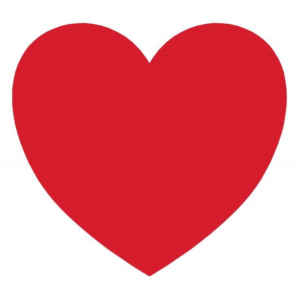

You don't have any liked tweets, go to the unordered tweets or ordered tweets and a click a tweet

 kanyewest
kanyewest
{{quote}}
kanyewest{{quote}}
You don't have any liked tweets, go to the unordered tweets or ordered tweets and a click a tweet
kanyewest